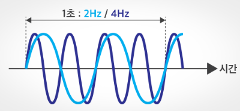
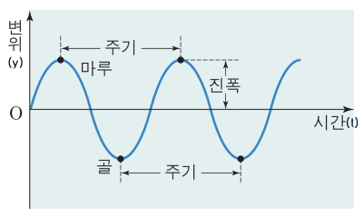
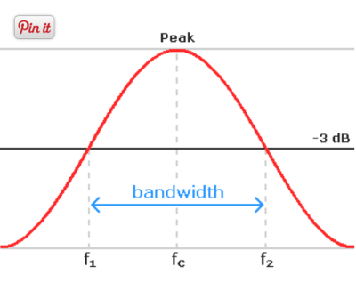

프로세스 동작
프로세스: 최종적으로 컴파일 된 바이너리 파일을프로그램이라고 칭하며 그 프로그램을 시작하면 그게 프로세스 이다
전체적인 흐름
- 프로그램 로드 (메모리 할당)
- 프로그램이 실행이 되면 OS에 의해 원시코드(기계어)가 메모리에 로드됨
- 여기서 핵심은 할당되는 메모리가
가상메모리(virtual memory)이다.
프로세스가 직접적으로 메모리를 할당 받게 되면 다른 프로세스가 메모리 영역을 침범하거나 하는 문제가 발생하므로 원래 물리 메모리에 주소를 참조하는
가상 메모리를 OS쪽에서 할당하여 프로세스에 전달 된다.
- CPU가 명령 해석 및 실행
- CPU가
프로그램 카운터(PC, Instruction Pointer, RIP)를 통해 명령어를 읽어옴
이것을Fetch과정이라고 한다. 보통 한번에 4개의 코드가 CPU에 로드가 된다. - 연산 명령 코드에 경우 연산장치에 전달하고, 메모리에 접근하는 명령어(레지스터)는
메모리 컨트롤러를 통해 메모리에서 데이터를 가져오게 됨 - CPU에서 연산이 완료되면 결과를 저장하게 되는데 명령어에 따라 레지스터에 저장 될 수도 있고 메모리에 저장 될 수도 있음
- CPU가
- 이제 이 과정이 반복된다.
CPU 내부에서에 연산은 레지스터가 직접 처리하므로 매우 빠르게 처리됨
어셈블리어 기준으로
mov 명령어를 사용하여 직접 레지스터에 데이터를 저장할 수 있고
eax 명령어를 사용하여 메모리에 저장되게 할 수 도 있다.
메모리 우선순위
레지스터 → 캐시메모리 → RAM
프로세스 메모리 구조

- Code 영역
- 실행파일에 원시 코드가 로드됨
- Data 영역
- 전역 변수 및 static 변수 로드
- Heap 영역
- 프로그래머가
malloc()등으로 직접 할당하는 변수들 저장 - Stack 영역보다 느리게 작동
- 프로그래머가
- stack 영역
- 지역변수 및 일반 할당 변수, 함수 리턴 주소, 포인터 저장
- 함수가 시작되거나 종료되면 할당을 자동으로 할당/해제
- Heap 영역 보다 빠름
여기서 Heap은 자료구조에서의 Heap (데이터의 최대값, 최소값을 빠르게 찾기위한 완전 2진트리) 과는 완전히 다르므로 오해하지 말자
Stack영역은 다른데 Stack자료구조와 마찬가지로 후입션출(먼저온게 먼저나감)구조로 동작한다.
어찌보면 프로세스에 전체적인 동작은 메모리가 담당한다고도 불 수 있겠다.
메모리 버스

컴퓨터에 물리 메모리와 메모리 컨트롤러를 연결하는 버스.
CPU는 메모리에 접근하기 위해 메모리 컨트롤러에 접근해야 되는데 이때 메모리 버스를 통해서 메모리 컨트롤러에 접근하게 된다.
메모리 또한 CPU에 접근하기 위해 메모리 버스를 통하게 된다.
요즘 DRAM은 지연시간을 줄이기 위해 칩에 직접적으로 연결되게 설계한다 카더라
메모리 작업
Read
- CPU가 메모리에 저장된 특정 값을 읽어 오는 작업
Write
- 메모리에 데이터를 저장하는 작업
해당 작업에 처리 속도는 오로지 RAM에 처리속도에 달려있음
즉 CPU클럭 속도가 높아지더라도 해당작업에 영향이 없음
CPU 동작 구조
참고자료

기본적인 흐름은 위 프로세스 동작과 동일하다
폰 노이만식 구조

CPU, 메모리, 프로그램 이 3가지 구성요소로 이루어진 컴퓨터 설계 방식
저장된 프로그램을 실행하면 메모리에 로드되고 CPU가 메모리에 로드된 명령어를 해석하여 연산 및 적절한 I/O 장치에게 전달하는 구조로 이루어 진다.
그리고 이들간에 통신은 버스형으로 처리된다.
폰노이만 구조 이전에는 저장이라는 개념 없이 단순히 신호를 처리하는 방식으로 이루어 졌다.
여기서 핵심은 메모리에는 프로그램 데이터와 코드를 동일한 메모리 공간에 저장한다.
무슨 소리냐면 프로그램 코드는 연산, 조건, 반복문에 논리 로직을 뜻하며 데이터는 변수를 뜻한다.
즉 이것들 전부를 한꺼번에 저장하여 CPU가 명령어를 해석 하면서 변수와 같은 데이터도 함께 처리할 수 있게 한 것이다.
위 그림땜에 오해 하면 안되는 게 CPU→메모리, 메모리→CPU 통신은 하나의 버스를 사용한다.
단점
병목현상이 존재한다.
CPU-메모리간 같은 버스를 공유하므로 전송 속도 제한이 생긴다.
또한 메모리 엑세스와, 명령어 실행이 동시에 이루어 질 수 없다는 뜻이기도 하다.
제일 큰 문제는 메모리는 아직 까지도 동작 속도가 수천Mhz 정도인 반면 CPU는 수Ghz 속도인게 크다.
이 정도 차이나는 연산속도를 가지고 같은 버스를 공유하니 병목이 안생길수가 없다.
한 가지 단순하게 개선점이 생각나는게
CPU→메모리, 메모리→CPU 이 버스를 각각 분리하면 안되나?
이런 의문을 가질 수 있는데 이게 생각보다 어렵다고 한다.
일단 CPU와 메모리 사이 배선을 추가해야 되며, 그로인한 설계가 복잡해진다.
그리고 에초에 CPU→메모리 (CPU 측에서 메모리에 Write)통신은 상대적으로 적기 때문에 성능 개선이 이루어지긴 하지만 수지타산이 안 맞는다.
그래서 차라리 아래 개선점 방법을 사용하고 있는 추세이다.
개선 점
하버드 아키텍처 도입:- 프로그램 코드와, 데이터 저장 공간을 분리하여 병목발생을 최소시킨다.
- 요즘 CPU는 내부적으로 이런 설계를 도입한다
케시메모리 도입- 레지스터보다 좀 더 크고 CPU에 추가적으로 내장 시켜서 병목을 최소화 한다
메모리 오버클럭:- 컴덕들에게 가장 사랑 받는 방법
- 직접 메모리에 동작 속도를 향상 시킨다
CPU와 RAM 사이 물리적 거리 최소화- 약간 무식한 방법인데, 물리적 거리를 최소화 하여, 버스에 이동 경로를 최소화 하는 방법이다.
- 이건 CPU 보단 현재 GPU에 쓰이는 HBM등이 메모리를 수직으로 적층하는 방식으로 하여 시도되고 있는 상황이다.
신호 용어
주파수(Frequency)

1초 동안 반복되는 진동 횟수
ex) 1Hz = 1초에 1번 진동
컴퓨터로 따지면 주파수가 높으면 높을 수록 더빨리 데이터 전송이 가능하다는 의미 이기도 함
CPU, 메모리가 이에 해당 (클럭 속도)
소리는 특이하게 주파수가 낮으면(저주파) 인간이 듣기에 저음역 소리가 나고, 주파수가 높으면(고주파) 고음역 소리가 남
단위
Hz: 헤르츠
kHz: 킬로헤르츠 (1000Hz)
MHz: 메가헤르츠 (100만 Hz)
GHz: 기가헤르츠 (10억 Hz)
진폭 (Amplitude)

표현 되는 신호가 얼마나 강하게 표현 되는가
앞서 설명한 주파수는 신호(파동)에서 주기가 얼마나 짧은지를 표현하는거고
진폭은 신호에 세기가 얼마나 큰지를 나타넴
컴퓨터 공학으로 치면 같은 1을 표현 하더라도 그 세기가 다를 수있는데 그게 진폭임
그래서 진폭은 데이터 전송에 속도랑은 관련이 없다.
에초부터 컴퓨터신호(디지털)을 다루는데 큰 의미가 없는 게 일단 0,1 만 표현 하면 되므로 그게 얼마나 큰 신호인지는 쓸모가 없기 때문
다만 아날로그 신호로 변환 할때 필요하긴 하다
소리 (db)
진폭이 크면 더 큰 소리가 남
전기 신호 (V)
더 큰 전압을 가짐
대역폭 (Bandwidth)
컴퓨터 공학
일정 시간 동안 전송할 수 있는 데이터의 양 즉 한번에 얼마나 많은양에 데이터가 전송가능 한지를 나타냄
압축된 오디오나 비디오 파일에서 비트전송률 (kbps)는 1초에 얼마큼에 데이터를 담고 있는지를 나타냄, 즉 비트전송률이 높을 수록 더 많은 비손실 데이터를 지니므로 더 좋은 소리를 냄
단위
bps, kbps, Gbps
전자 공학

신호나, 시스템에서 처리할 수 있는 주파수의 범위
즉 특정 시스템에서 사용 가능한 주파수 범위를 뜻함
사진처럼 Peek 구간부터 -3db 까지 떨어지는 지점 까지를 대역폭
단위
Hz
파장 (Wavelength)
주파수가 1초에 몇번 진동 하는지를 나타낸거라면 파장은 이때 진동-진동 사이에 길이를 나타냄
즉 주파수가 크면, 그만큼 진동과 진동 사이 길이가 좁다는걸 의미하니까 파장이 짧고
주파수가 적으면 그만큼 사이 길이가 길다는 거니까 파장이 길다.
단위
m(미터)